1. Introducción
El Creador de Mapas Interactivos sirve para construir mapas de ubicación de sustancias químicas a partir de un plano de la planta y publicarlos como archivos HTML independientes que cualquier persona puede abrir en PC o en teléfono.
Un mapa tiene tres niveles de información, igual que el PowerPoint Layout de químicos L1:
Plano de la línea con las áreas marcadas y los pictogramas de colores de cada sustancia.
Al tocar un área: foto(s) del lugar, sustancias presentes y ubicación en el plano.
Al tocar un pictograma: etiqueta SGA, palabra de advertencia, frases H, contacto de emergencia y dónde se encuentra.
El sistema tiene dos partes:
- El editor (
index.html): donde la persona responsable crea y mantiene los mapas. Pensado para PC o tablet. - Los mapas exportados (
Mapa_Linea_1.html, etc.): el resultado final que se comparte con el personal. Son de solo consulta, no necesitan internet ni instalar nada.
2. Abrir la aplicación
- Abre la carpeta del proyecto
Creador_Mapas_Interactivos. - Haz doble clic en
index.html. Se abre en el navegador (Chrome, Edge o Firefox recomendados). - La primera vez se carga el ejemplo L1 / L2. A partir de ahí, todo lo que cambies se guarda solo en ese navegador; el indicador de la cabecera muestra Guardado en este navegador.
También puedes acceder desde el botón ? Ayuda de la cabecera del editor para volver a este manual.
3. La pantalla del editor
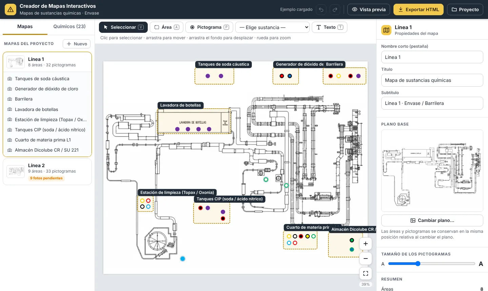
| Zona | Qué contiene |
|---|---|
| Cabecera | Nombre del proyecto (editable), estado de guardado, Deshacer / Rehacer, Vista previa, Exportar HTML, Proyecto y Ayuda. |
| Panel izquierdo | Pestaña Mapas: lista de mapas y, debajo del mapa activo, sus áreas (con aviso de Foto pend.). Pestaña Químicos: la biblioteca de sustancias. |
| Barra de herramientas | Seleccionar, Área, Pictograma (con la lista de sustancias) y Texto. A la derecha, una ayuda breve de la herramienta activa. |
| Lienzo | El plano con áreas, pictogramas y textos. Botones de zoom abajo a la derecha. |
| Panel derecho | Propiedades de lo seleccionado: del mapa (si no hay nada seleccionado), de un área, de un pictograma o de un texto. |
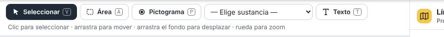
Moverse por el plano
- Zoom: rueda del ratón (se acerca hacia donde apunta el cursor), botones + −, o teclas + −.
- Desplazar: con la herramienta Seleccionar, arrastra una zona vacía del plano. Con cualquier herramienta: mantén Espacio y arrastra, o usa el botón central del ratón.
- Ver todo: botón ⤢ o tecla 0.
4. Mapas y planos
Crear un mapa nuevo
- En la pestaña Mapas pulsa + Nuevo.
- Escribe el nombre corto (es el que aparece en la pestaña del mapa exportado, p. ej. «Línea 3»), el título y, si quieres, un subtítulo.
- Pulsa Elegir imagen… y selecciona el plano (PNG, JPG o WebP). Puedes dejarlo para después.
- Pulsa Crear mapa.
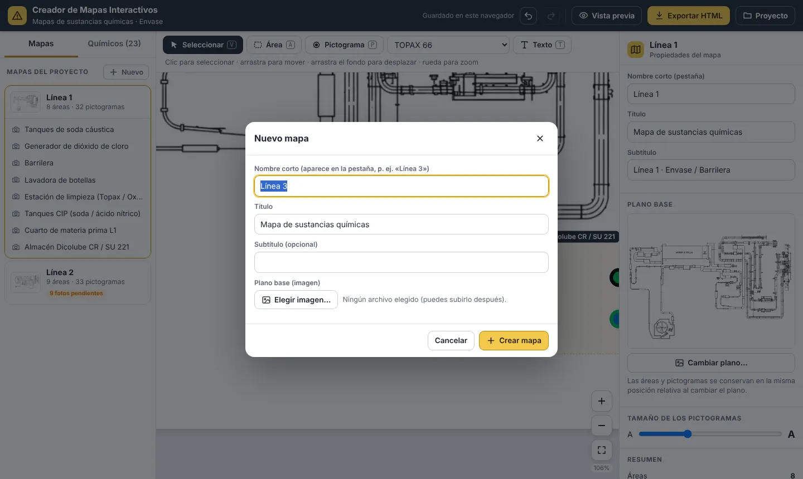
Propiedades del mapa
Con nada seleccionado (pulsa Esc o haz clic en una zona vacía), el panel derecho muestra el mapa:
- Nombre, título y subtítulo.
- Plano base → Cambiar plano…: reemplaza la imagen. Las áreas y pictogramas conservan su posición relativa (en %), así que conviene que el nuevo plano tenga el mismo encuadre.
- Tamaño de los pictogramas: los agranda o achica en todo el mapa.
- Resumen: número de áreas y pictogramas, áreas con foto pendiente y sustancias sin ficha. Es la lista de tareas pendientes del mapa.
- Botones Vista previa, Exportar, Duplicar y Eliminar.
5. Áreas
Un área es una zona clicable del plano (un cuarto, un equipo, una estación). En el mapa exportado se ve como un recuadro punteado con su nombre y, al tocarla, abre su foto y la lista de sustancias.
5.1 Crear y ajustar un área
- Elige la herramienta Área (A).
- Arrastra sobre el plano para dibujar un rectángulo que cubra la zona.
- Al soltar, el área queda seleccionada y el cursor está en Nombre del área: escribe el nombre (p. ej. «Cuarto de materia prima L2»).
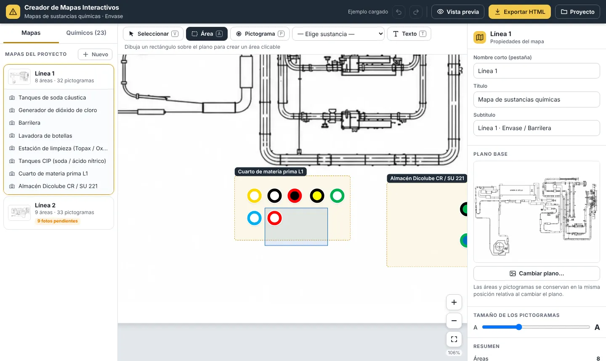
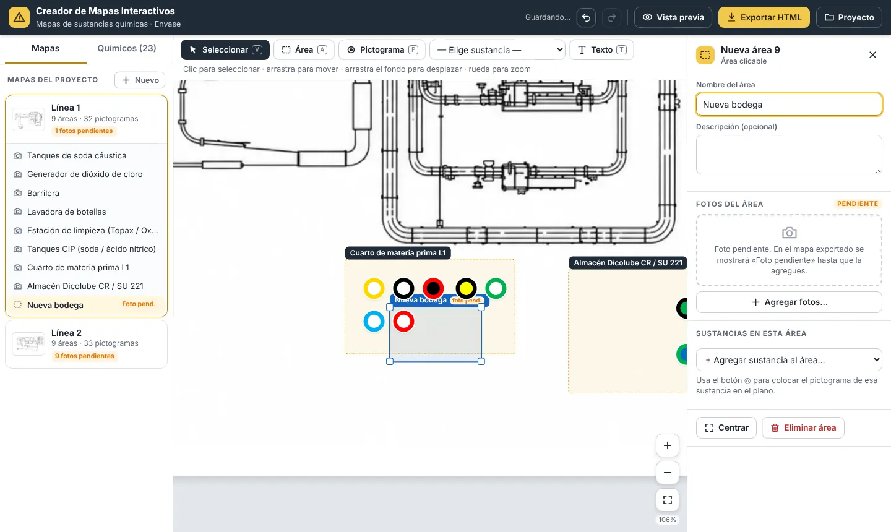
Mover, redimensionar y eliminar
- Mover: con Seleccionar (V), arrastra el área. Sus pictogramas se mueven con ella.
- Redimensionar: arrastra los cuadritos azules de las esquinas del área seleccionada.
- Ir a un área: haz clic en su nombre en el panel izquierdo; el botón Centrar la enfoca en el lienzo.
- Eliminar: botón Eliminar área o tecla Supr. Se eliminan también sus pictogramas. Si fue un error: Ctrl+Z.
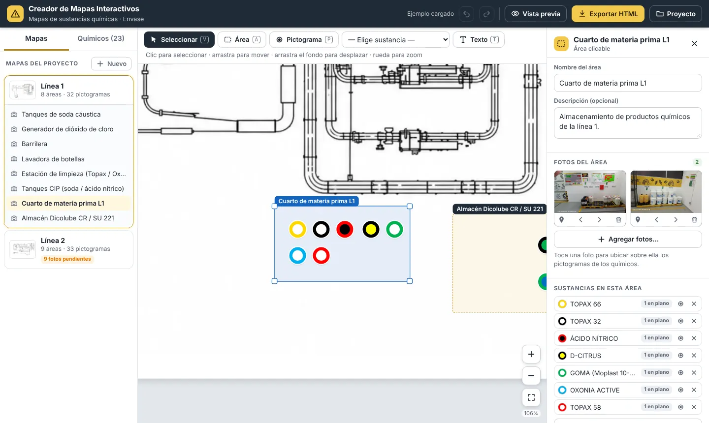
5.2 Fotos del área
En el panel derecho del área, sección Fotos del área:
- + Agregar fotos…: puedes elegir varias a la vez. Se reducen automáticamente para que el HTML no pese demasiado.
- Debajo de cada miniatura: 📍 ubicar químicos en la foto, ‹ › cambiar el orden, 🗑 eliminar.
- La primera foto es la que se muestra primero en el mapa exportado; las demás se recorren con flechas.
Si un área no tiene foto, el editor la marca como Foto pendiente y el mapa exportado muestra un aviso de «Foto pendiente — se agregará posteriormente». Es el caso actual de las áreas de Línea 2.
La sección Sustancias en esta área lista los químicos del área. Desde ahí puedes agregar más (+ Agregar sustancia al área…), quitar (✕) o colocar su pictograma en el plano (◎).
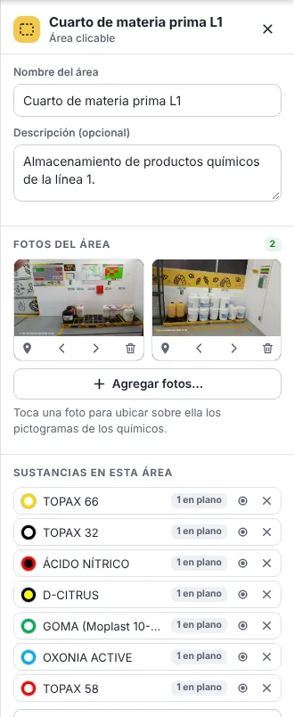
5.3 Ubicar los químicos sobre la foto
Esto permite que, en la foto del área, cada envase tenga encima su pictograma y al tocarlo se abra su ficha.
- Haz clic en la miniatura de la foto (o en 📍).
- A la derecha, elige la sustancia de la lista (las del área aparecen primero; + Otra sustancia… agrega otras).
- Haz clic en la foto justo sobre el envase. Repite con cada sustancia.
- Para corregir: arrastra el pictograma. Para borrarlo: selecciónalo y pulsa Supr o Eliminar ubicación seleccionada.
- Pulsa Listo.
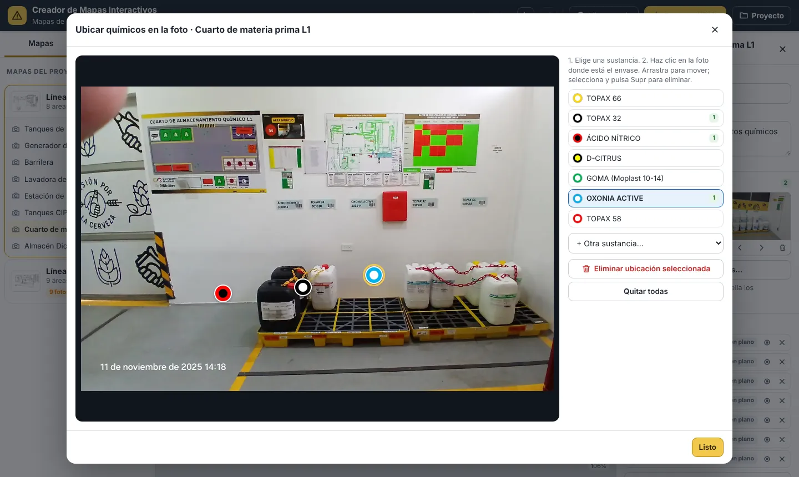
6. Pictogramas en el plano
Los pictogramas son los círculos de colores que identifican cada sustancia en el plano (relleno + aro, como en la leyenda de la planta).
- Elige la sustancia en la lista desplegable de la barra de herramientas (al elegirla se activa la herramienta Pictograma). También puedes usar el botón ◎ junto a una sustancia en el panel del área.
- Haz clic en el plano donde está la sustancia. Puedes seguir haciendo clic para colocar más del mismo tipo.
- Pulsa Esc para terminar.
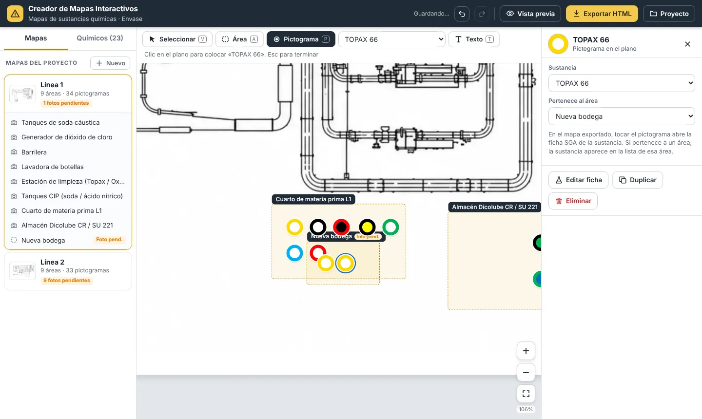
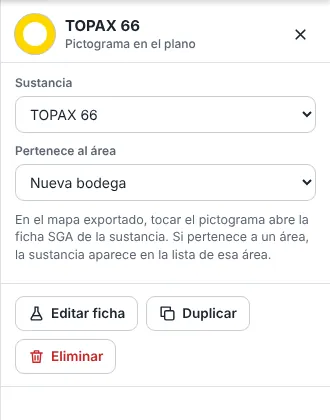
- Asignación automática: si colocas (o arrastras) un pictograma dentro de un área, queda asociado a ella y la sustancia se agrega a la lista del área.
- Pictogramas sueltos: si queda fuera de toda área, en el mapa exportado se toca directamente para abrir la ficha. En el editor se ven con un halo azul.
- Cambiar: selecciona el pictograma y cambia la Sustancia o el Área en el panel derecho. Duplicar crea una copia al lado.
- Editar ficha o doble clic en el pictograma: abre el químico en la biblioteca.
7. Textos
La herramienta Texto (T) añade rótulos sobre el plano, como «USTED ESTÁ AQUÍ» o el nombre de una zona sin área. Haz clic donde quieras, escribe el texto en el panel derecho y ajusta el tamaño. Se mueven arrastrando con Seleccionar.
8. Biblioteca de químicos
La pestaña Químicos del panel izquierdo contiene todas las sustancias, compartidas por todos los mapas. Si actualizas la ficha de un químico, se actualiza en todos los mapas al volver a exportarlos.
En la lista se ve cuántos pictogramas tiene cada sustancia y cuántas fichas; las que no tienen ficha aparecen con Ficha pendiente (actualmente ALCOHOL y DRYEXX GF).
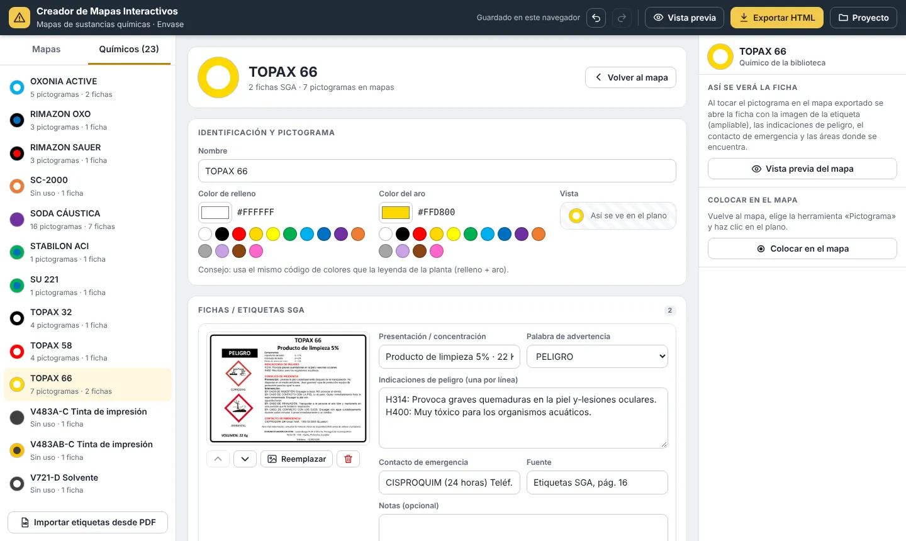
8.1 Crear un químico, nombre y colores
- Pulsa + Nuevo en la pestaña Químicos.
- Escribe el nombre tal como aparece en la etiqueta.
- Elige el Color de relleno y el Color del aro (con el selector o con las muestras). La vista previa muestra cómo se verá en el plano.
Código de colores usado en el ejemplo (tomado de la leyenda del PowerPoint):
| Sustancia | Pictograma | Sustancia | Pictograma |
|---|---|---|---|
| TOPAX 32 | aro negro | RIMAZON OXO | azul, aro negro |
| TOPAX 58 | aro rojo | RIMAZON SAUER | rojo, aro negro |
| TOPAX 66 | aro amarillo | DICOLUBE CR / DRYEXX GF | verde, aro negro |
| OXONIA ACTIVE | aro celeste | SU 221 / STABILON | azul, aro verde |
| GOMA | aro verde | ÁCIDO NÍTRICO | negro, aro rojo |
| SODA CÁUSTICA | morado | D-CITRUS | amarillo, aro negro |
| ALCOHOL | celeste |
8.2 Fichas SGA
Cada químico puede tener una o varias fichas (una por presentación o concentración). En el mapa exportado aparecen como pestañas, por ejemplo «Hidróxido de Sodio 50 % · 1000 Kg» y «2 – 2,5 % · 5200 L».
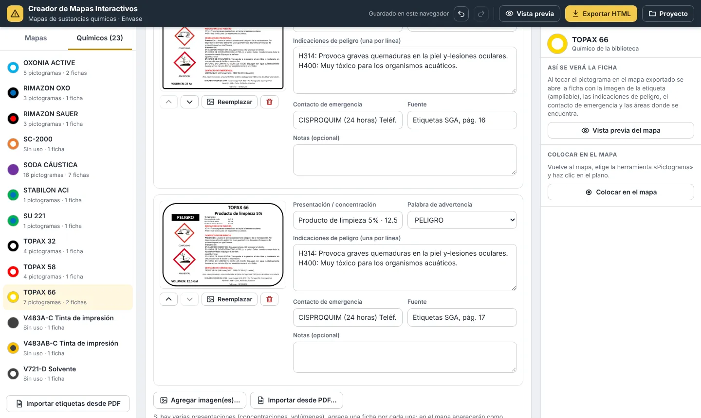
Campos de cada ficha:
| Campo | Uso |
|---|---|
| Imagen | La etiqueta SGA. En el mapa se puede ampliar con los dedos. Reemplazar cambia la imagen. |
| Presentación / concentración | Nombre de la pestaña (p. ej. «Producto de limpieza 5 % · 22 Kg»). |
| Palabra de advertencia | PELIGRO (rojo) o ATENCIÓN (naranja). |
| Indicaciones de peligro | Una frase H por línea. Se muestran como texto legible en el teléfono sin tener que ampliar la imagen. |
| Contacto de emergencia | Teléfono que se destaca en verde. |
| Fuente / Notas | Origen del documento y observaciones adicionales. |
Para agregar fichas desde imágenes: Agregar imagen(es)… (PNG, JPG, WebP; puedes elegir varias).
8.3 Importar etiquetas desde un PDF
Si las etiquetas están en un PDF (una por página, como ETIQUETAS FORMATO SGA.pdf):
- Abre un químico y pulsa Importar desde PDF…, o en la pestaña Químicos pulsa Importar etiquetas desde PDF.
- Elige el PDF. Se muestran las miniaturas de todas las páginas; las que parecen etiquetas SGA se preseleccionan.
- Elige el modo:
- Agregar como fichas de «…»: todas las páginas seleccionadas van al químico abierto.
- Crear un químico por página: usa el título de la etiqueta; si ya existe un químico con ese nombre, la ficha se agrega a él.
- Marca o desmarca páginas haciendo clic y pulsa Importar.
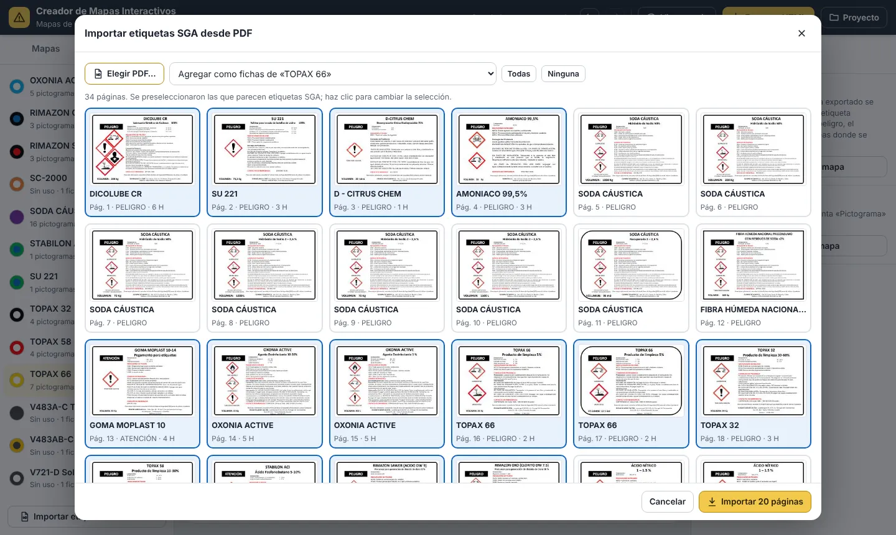
La importación lee automáticamente la palabra de advertencia, las frases H, la presentación/volumen y el contacto de emergencia. Revisa los campos después de importar.
Eliminar un químico
Al final de la página del químico, Eliminar químico. Se borran también sus pictogramas en todos los mapas (se puede deshacer con Ctrl+Z). La tarjeta Uso en los mapas muestra antes en qué áreas aparece.
9. Vista previa
El botón Vista previa muestra exactamente el HTML que se va a exportar, sin descargarlo. Arriba puedes cambiar entre PC y Teléfono para comprobar cómo se ve en cada caso, y exportar desde ahí mismo.
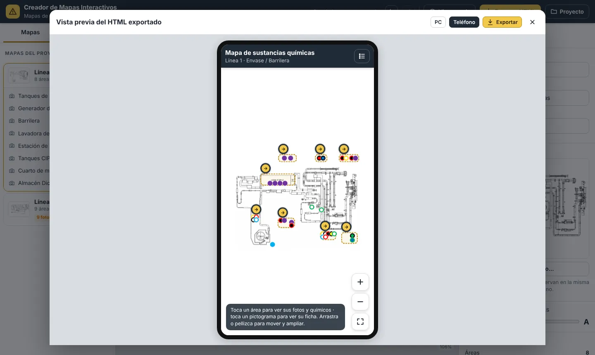
10. Exportar y distribuir
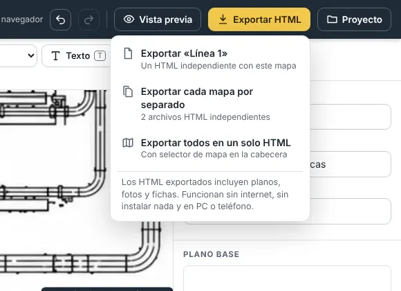
| Opción | Resultado |
|---|---|
| Exportar «Línea 1» | Un archivo Mapa_Linea_1.html solo con ese mapa. |
| Exportar cada mapa por separado | Un archivo por mapa (el navegador puede pedir permiso para descargar varios archivos). |
| Exportar todos en un solo HTML | Un archivo con todos los mapas y botones para cambiar entre ellos en la cabecera. |
El HTML exportado contiene todo: plano, fotos, fichas y el visor. Solo incluye las fichas de las sustancias que aparecen en el mapa. Pesa unos 3–5 MB.
Cómo compartirlo
- PC: carpeta compartida, correo o USB. Se abre con doble clic.
- Teléfono: lo más práctico es publicarlo en una dirección web (intranet, SharePoint/OneDrive con enlace, GitHub Pages) y compartir el enlace o un código QR pegado en el área. Al abrirlo como archivo descargado, algunas apps de vista previa del teléfono no ejecutan JavaScript; en ese caso, ábrelo con el navegador (Chrome o Safari).
- Cuando actualices un mapa, exporta de nuevo y reemplaza el archivo en el mismo lugar, con el mismo nombre, para que el enlace o QR siga funcionando.
11. Guardar y abrir proyectos
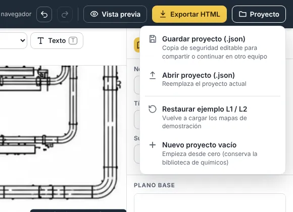
| Opción | Cuándo usarla |
|---|---|
| Guardar proyecto (.json) | Copia de seguridad completa y editable (mapas, químicos, fotos y fichas). Hazla después de cada sesión de cambios importante y guárdala en una carpeta compartida. |
| Abrir proyecto (.json) | Para continuar en otro equipo, recuperar una copia o recibir el trabajo de otra persona. Reemplaza el proyecto actual (se puede deshacer). |
| Restaurar ejemplo L1 / L2 | Vuelve a cargar los mapas de demostración originales. |
| Nuevo proyecto vacío | Elimina los mapas pero conserva la biblioteca de químicos con sus fichas. |
12. Consultar el mapa (personal de planta)
Esta sección puede imprimirse o compartirse por separado con quienes solo consultan los mapas.
En PC
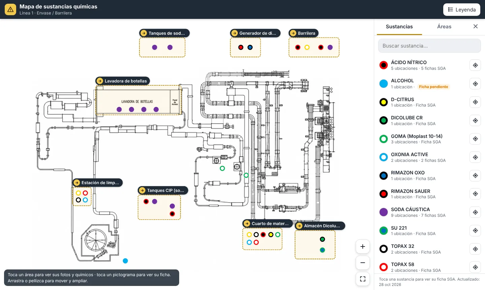
- Ver un área: haz clic en el recuadro o en la etiqueta oscura con su nombre.
- Ver la ficha de un químico: haz clic en su círculo de color (en el plano, en la foto o en la lista del área), o en su nombre en la leyenda.
- Ampliar la etiqueta: haz clic sobre la imagen de la etiqueta; se abre a pantalla completa con zoom.
- Volver: botón ‹ Mapa, la ✕ de la ficha, la tecla Esc o el botón «atrás» del navegador.
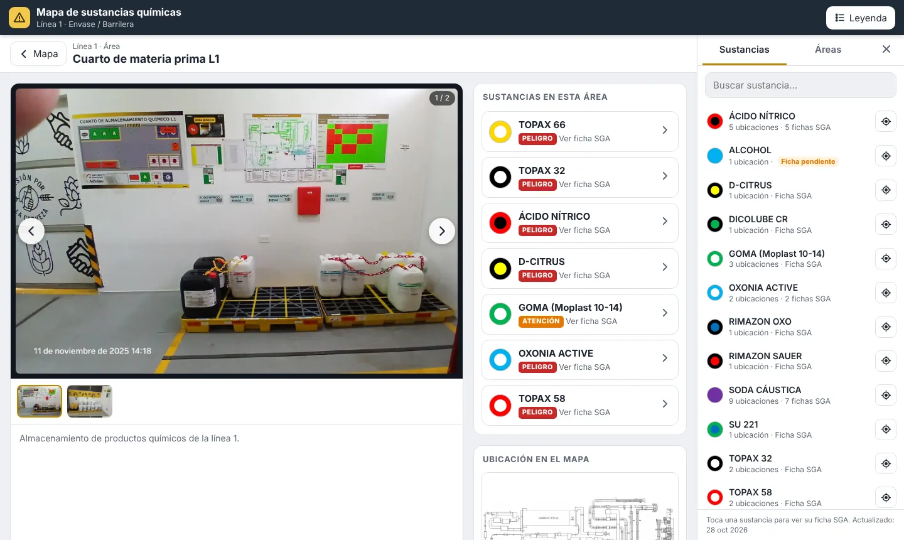
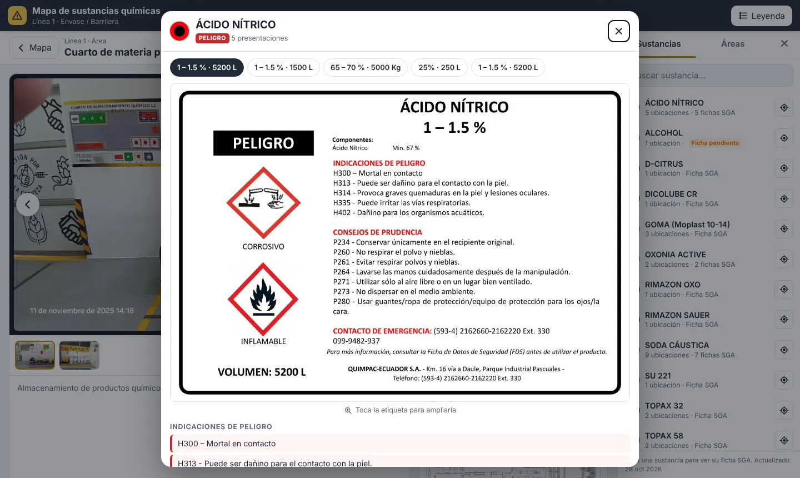
Leyenda: buscar y resaltar
La leyenda tiene dos pestañas: Sustancias y Áreas, con buscador. El botón ⌖ junto a una sustancia la resalta en el mapa (las demás se atenúan) para ver de un vistazo todos los lugares donde está. Quitar vuelve a la vista normal.
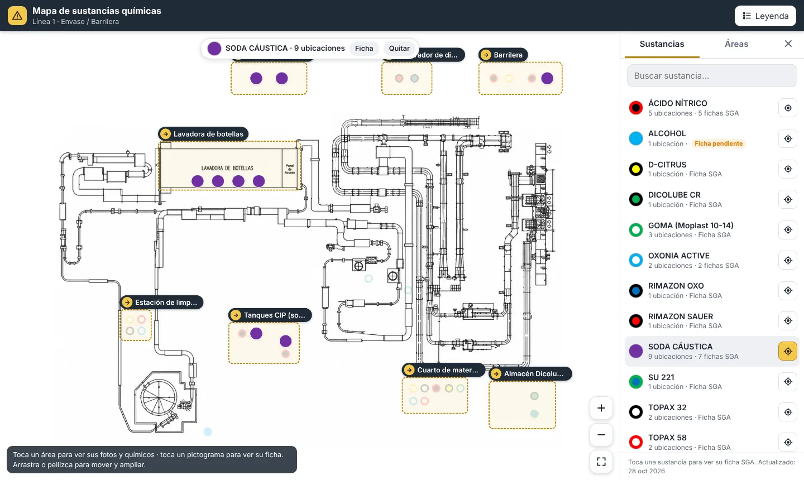
En el teléfono
- Pellizca para ampliar y arrastra con un dedo para moverte. Los botones + − ⤢ de la esquina también sirven.
- El botón ☰ de la cabecera abre la leyenda desde abajo. La pestaña Áreas es la forma más cómoda de ir a un área en pantallas pequeñas.
- El botón «atrás» del teléfono cierra la ficha o vuelve del área al mapa.
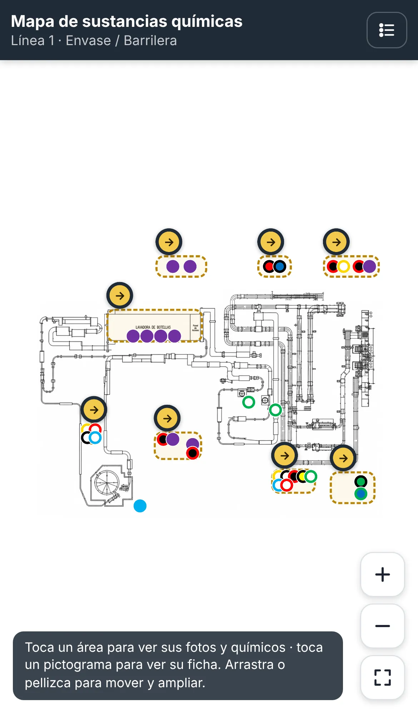
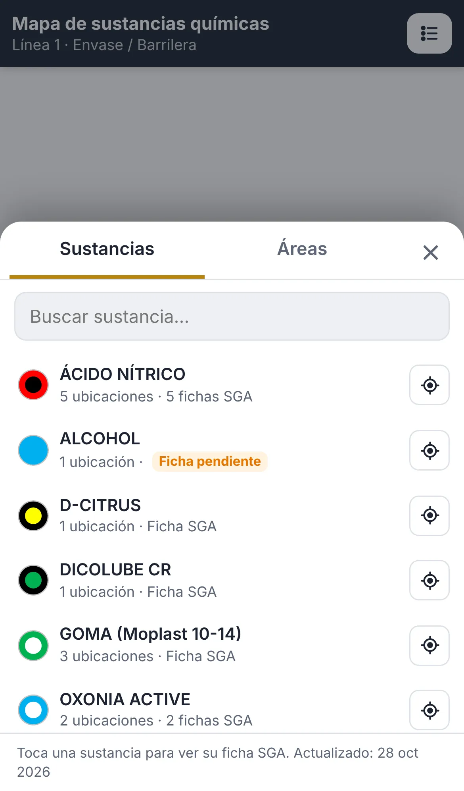
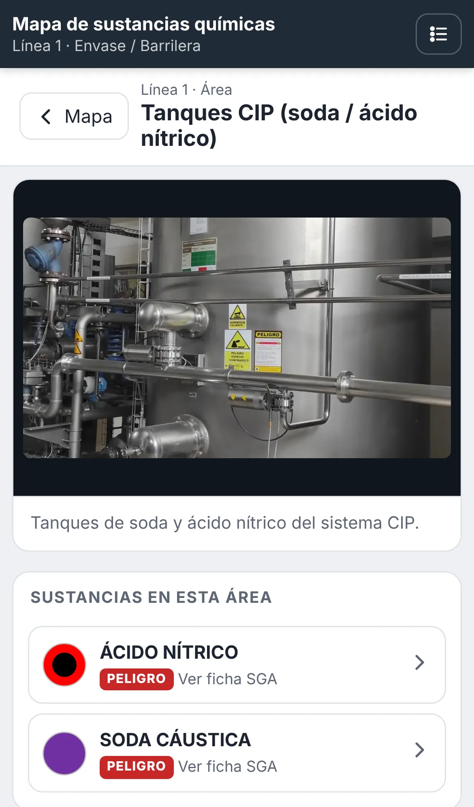
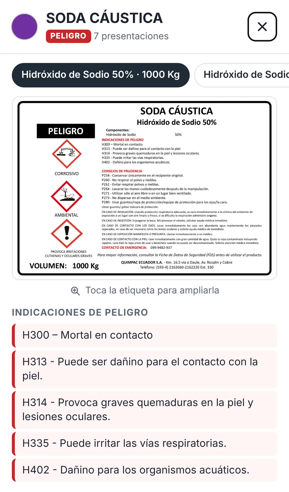
13. Tareas frecuentes
Agregar las fotos pendientes de Línea 2
- Pestaña Mapas → Línea 2. Las áreas sin foto muestran Foto pend..
- Haz clic en el área → + Agregar fotos… → elige las fotos.
- (Opcional) Toca la foto y ubica los químicos sobre ella.
- Repite con cada área. El resumen del mapa muestra cuántas faltan.
- Exportar HTML → reemplaza
Mapa_Linea_2.htmldonde esté publicado.
Llega un químico nuevo a la planta
- Químicos → + Nuevo (o Importar etiquetas desde PDF). Nombre, colores y ficha SGA.
- Mapas → elige la sustancia en la barra de herramientas y haz clic en el plano donde se almacena.
- Verifica en Vista previa y exporta de nuevo los mapas afectados.
Un químico cambia de lugar o se retira
- Cambia de lugar: arrastra su pictograma a la nueva área (se reasigna solo) y, si tiene ubicación en la foto, corrígela.
- Se retira de un área: en el panel del área, ✕ junto a la sustancia (elimina también sus pictogramas en esa área).
- Se retira de la planta: Químicos → Eliminar químico.
Actualizar una etiqueta SGA
Químicos → el químico → en la ficha, Reemplazar la imagen y revisa los campos de texto. Luego exporta todos los mapas donde aparece (la tarjeta «Uso en los mapas» lo indica).
Lista de verificación antes de publicar
- El resumen del mapa no muestra áreas con foto pendiente (o están justificadas).
- Ninguna sustancia del mapa tiene «Ficha pendiente» (o está justificada).
- Los colores del mapa coinciden con la leyenda física de la línea.
- Revisada la vista previa en modo Teléfono.
- Exportado el HTML y reemplazado en el lugar publicado.
- Guardada una copia del proyecto (.json).
14. Atajos de teclado (editor)
| Tecla | Acción |
|---|---|
| V | Herramienta Seleccionar |
| A | Herramienta Área |
| P | Herramienta Pictograma |
| T | Herramienta Texto |
| Esc | Volver a Seleccionar / quitar la selección / cerrar diálogos |
| Supr o Retroceso | Eliminar lo seleccionado |
| Ctrl+Z | Deshacer |
| Ctrl+Y o Ctrl+Mayús+Z | Rehacer |
| + / − / 0 | Acercar / alejar / ver todo el plano |
| Espacio + arrastrar | Desplazar el plano con cualquier herramienta |
| Doble clic en un pictograma | Abrir el químico en la biblioteca |
En Mac, usa ⌘ en lugar de Ctrl.
15. Problemas y preguntas frecuentes
Cambié algo en el editor pero el mapa que tienen en planta no cambió.
Los HTML exportados son copias fijas. Exporta de nuevo y reemplaza el archivo publicado.
Abrí el editor y no aparecen mis cambios.
El guardado automático es por navegador y equipo. Comprueba que usas el mismo navegador y equipo. Si borraste los datos de navegación o cambiaste de equipo, usa Proyecto → Abrir proyecto (.json) con tu última copia.
Me equivoqué y borré un área o un químico.
Pulsa Ctrl+Z (o el botón Deshacer de la cabecera) tantas veces como haga falta. El historial se pierde al recargar la página.
La importación de PDF dice que no se pudo cargar el lector.
Necesita conexión a internet. Alternativa: exporta las páginas del PDF como imágenes y usa Agregar imagen(es)….
En el teléfono el HTML se ve como texto o en blanco.
La app que lo abrió no ejecuta JavaScript (por ejemplo una vista previa de archivos). Ábrelo con Chrome o Safari, o publícalo en una dirección web y comparte el enlace.
En el teléfono es difícil tocar un pictograma pequeño.
Amplía con dos dedos sobre la zona: a partir de cierto tamaño cada pictograma se puede tocar individualmente. También puedes abrir el área (o usar la leyenda) y tocar la sustancia en la lista.
El archivo HTML pesa mucho.
El peso viene sobre todo de fotos y fichas. Las fotos se reducen automáticamente al subirlas; evita subir fotos repetidas y elimina fichas que ya no se usen. Un mapa típico pesa 3–5 MB.
Cambié el plano y los pictogramas quedaron desplazados.
Las posiciones se guardan en porcentaje del plano. Si el nuevo plano tiene otro encuadre o márgenes, hay que reacomodar las áreas (arrastrándolas, sus pictogramas se mueven con ellas). Si el resultado no te convence, Ctrl+Z restaura el plano anterior.
¿Puedo usar la aplicación para otros planos (EPP, extintores, rutas de evacuación)?
Sí. Los «químicos» funcionan como cualquier elemento con un símbolo de color y una ficha con imagen; basta con crear los elementos que necesites en la biblioteca.